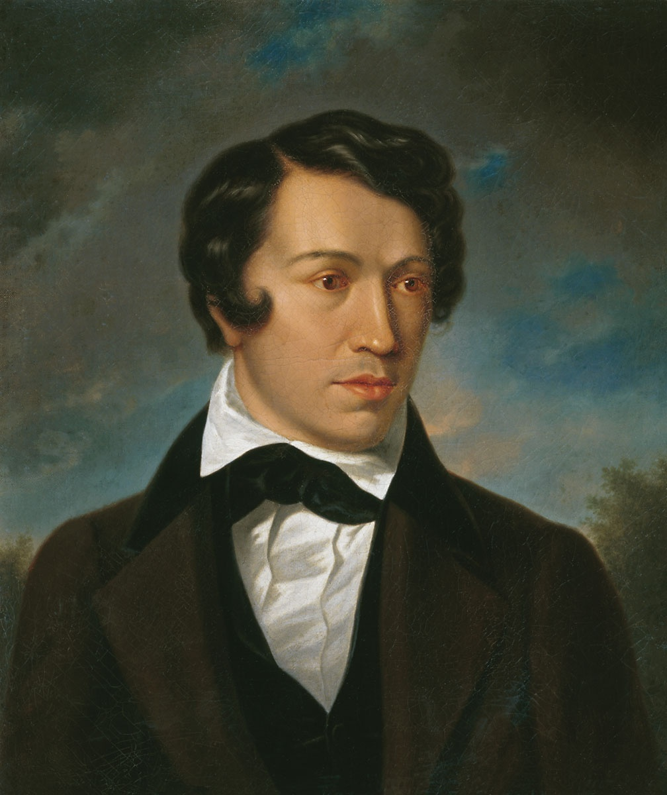
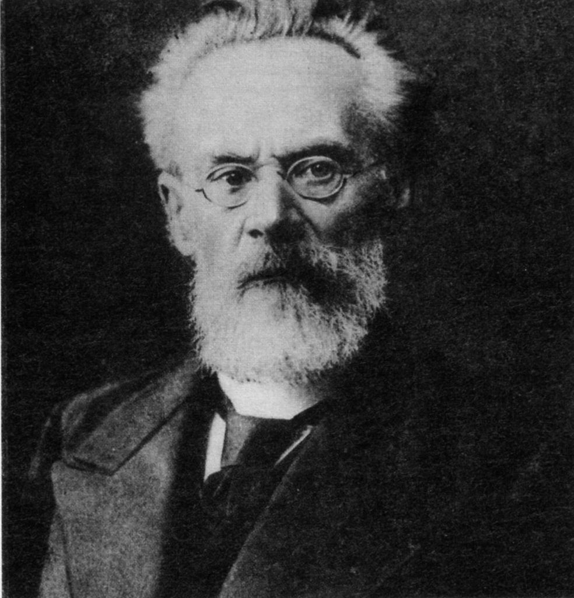
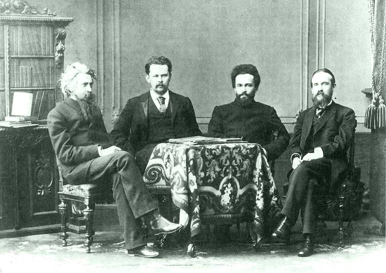
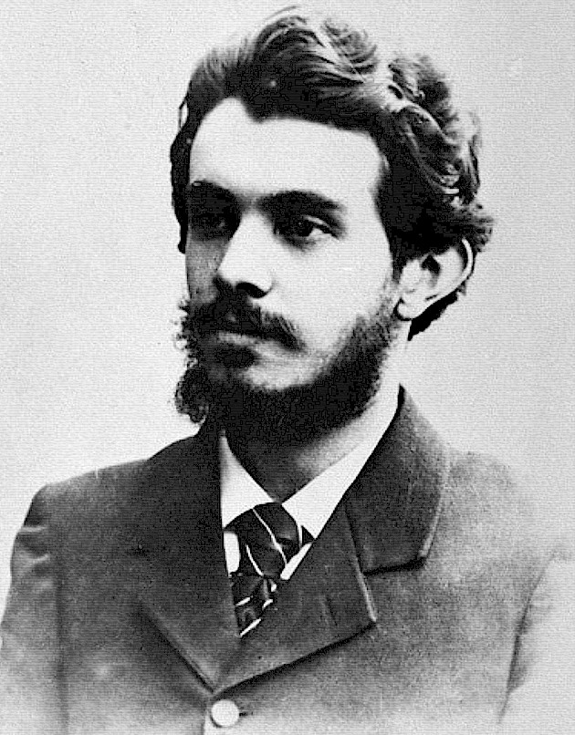

Алексей Хомяков
Самая главная заслуга Хомякова состоит в том, что он первый ощутил и осознал несоответствие между русским школьным богословием и живым духом Православия.
Соединяя православие и философию, А.С. Хомяков пришел к мысли, что истинное познание недоступно отдельному рассудку, оторвавшемуся от веры и церкви. Такое знание ущербно и неполно. Только «знание живое», основанное на Вере и Любви, может открыть истину. А.С. Хомяков был последовательным противником рационализма. Основу его теории познания составляет принцип «соборности». Соборность - есть особый вид коллективизма. Это церковный коллективизм. С ним как духовным единством связан интерес А.С. Хомякова к общине как социальной общности. Мыслитель защищал духовную свободу личности, на которую не должно покушаться государство, его идеал - «республика в области духа». Позднее славянофильство эволюционирует в направлении национализма и политического консерватизма.Лев Тихомиров
Я хотел бы упустить некие сведения, поскольку не считаю их столь важными в том контексте, в котором мы говорим. Лев Александрович был поистине умный человек,ведь чего только стоит один его труд! Называется же он "Монархическая государственность". В чем же заслуга Тихомирова для русской философии? Тихомиров стал первым русским мыслителем, разработавшим учение о русской государственности, о ее сущности и условиях ее действия. Также потрясающая идея Тихомирова о том, что наши социум это лишь необходимое стадия для того, чтобы прийти к Богу.Соловьев,Трубецкой,Грот,Лопатин
Все они состояли в журнале "«Вопросы философии и психологии» Самым известный из них,конечно, являлется Владимир Соловьев. Именно Соловьвеву принадлжеит философская концепция Богочеловека. Трубецкой же уделял особое внимание вопросам соотношения и взаимосвязи философии и религии, обоснованию христианского вероучения, в том числе вопросам бессмертия. В своей докторской диссертации «Учение о Логосе в его истории» он с симпатией и в то же время критически исследовал концепцию, согласно которой греческая философия подготовила человечество к восприятию христианства. Особое внимание в его религиозной философии «конкретного идеализма» уделялось разработке закона «универсальной соотносительности», который сводился к утверждению, что «знание приобретает логическую последовательность лишь в случае, когда оно является следствием универсального разума или второй ипостаси божественной Троицы». Посредством закона «универсальной соотносительности» Трубецким была сделана попытка преодолеть «односторонность» подходов трёх китов философии — рационализма, эмпиризма и мистицизма, соединив вместе их подходы к познанию бытия: разум, опыт и интуицию. Николай Грот, также, относился к социологом. Придерживался идеалистический взглядов (а это безусловно правильно). Является одним из основателей русской экспериментальной психологии, автор теории эмоционально-нравственного развития человека. Специалист по теории философского знания, гносеологии и этике. ЛОПАТИН, как я предполагаю, является самым ярким из данных представитель. С чем эо может быть связано? В первую очередь нужно отметить, что все вышеперичисленные лица были под влиянием идей Соловьева, но Лопатин придерживался, исключительно,своих и идей. В чем они заключались? Он также, как и остальные философы пытался разгадать, что есть зло и откуда оно появляется. Говоря о зле он пришел к мысле о личности. Именно начиная с личностью и порождается зло, поскольку, чтобы стать личностью нужно утвердиться. Из утверждения личностью и рождаеться зло.Николай Бердяев
Говоря о Бердяеве, я хотел бы отметить его взгляды Николая Александровича на персанолизм. Но для того,чтобы понять о чем говорит Бердяев, нужно привести терминологию перасанолизма. Персонализм рассматривает личность как высшую ценность культуры, а мир как проявление личностной творческой активности. Возникает персонализм в начале XX в. в России. Персонализм отрицает прагматическое (частичное) отношение к человеку, рассматривая личность как целостность и высшую культурную ценность. Человек по Бердяеву является свободным, творческим, таковым он (человек) является лишь в свете божественного, точнее, божественного «ничто». Бог сотворил мир из Ничто, следовательно, Богу предшествует первичный принцип, не предполагающий какой-либо дифференциации, какого-либо бытия. Это и есть Ничто. Бог свободен. И человек свободен. Бог помогает человеку стать добрым, но он не в состоянии контролировать Ничто, принцип свободы. В своей подлинной свободе человек божественен. Бог и человек есть дух. Будучи свободным, человек творит, оправдание человека в его свободе, его творчестве, его откровении. Для Бердяева главное -- это оправдание человека, его философия ярко персоналистична, романтична, расцвечена тысячами красок человеческого бытия.Сергей Булгаков
 Говоря о Сергеи Булгакове, конечно, сразу вспоминается то, что ранее он являлся материалистом (что не является верным), но при всем этом у него замечательный сборник статей под названием: "от материализма к идеализму", где сам Булгаков приводит примеры из своей жизни, почему и как он пришел к материализму, апосле, как пришел и к идеализму.
Важнейшим философским вопросом для Булгакова есть проблематика подлинного пути и принципа жизни, на котором могло бы основываться общество.
, Булгаков оценивает высказанные положения К. Маркса как человекобожие, попытка возвести человеческого рода в статус божественного и, одновременно сформулировать теорию, бесцеремонно относящуюся к личностной индивидуальности.
Так, христианское нравоучение, по мнению Булгакова, заставляет человека ощущать в себе бессмертный дух, побуждение личности к указанию для каждого человека его собственного пути развития, собственного роста и т.д.
Булгаков писал, что описанный социализм Маркса полностью упраздняет индивидуальность, ставя во главу общественные отношения, а не человека, сводя личность к общественным рефлексам и заимствуя идею мессии, заменив понятие избранности народа на пролетариат с его особенными революционными целями, а сатану - на класс капиталистов с его неутолимой жаждой большего.
Говоря о Сергеи Булгакове, конечно, сразу вспоминается то, что ранее он являлся материалистом (что не является верным), но при всем этом у него замечательный сборник статей под названием: "от материализма к идеализму", где сам Булгаков приводит примеры из своей жизни, почему и как он пришел к материализму, апосле, как пришел и к идеализму.
Важнейшим философским вопросом для Булгакова есть проблематика подлинного пути и принципа жизни, на котором могло бы основываться общество.
, Булгаков оценивает высказанные положения К. Маркса как человекобожие, попытка возвести человеческого рода в статус божественного и, одновременно сформулировать теорию, бесцеремонно относящуюся к личностной индивидуальности.
Так, христианское нравоучение, по мнению Булгакова, заставляет человека ощущать в себе бессмертный дух, побуждение личности к указанию для каждого человека его собственного пути развития, собственного роста и т.д.
Булгаков писал, что описанный социализм Маркса полностью упраздняет индивидуальность, ставя во главу общественные отношения, а не человека, сводя личность к общественным рефлексам и заимствуя идею мессии, заменив понятие избранности народа на пролетариат с его особенными революционными целями, а сатану - на класс капиталистов с его неутолимой жаждой большего.